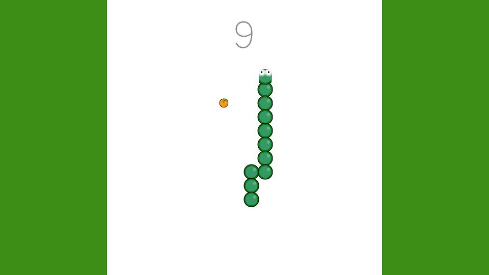

Games
Roguebook (2021)
Roguebook's Launch Trailer
Roguebook is the first game I worked on in a professional context. Developed by the belgian studio Abrakam Entertainment, this is where I did my final internship for my studies. I started by helping on the development of the game by doing mainly bug fixing. However, I spent most of my time on the console port of the game, especially on the Playstation 4, Playstation 5, Xbox One and Xbox Series. During this time, I had the opportunity to work on the implementation of the SDKs of these consoles to run the game on these platforms.
I also worked on the TRCs (Technical Requirement Checklist) and the constraints brought by those, sometimes requiring the addition of features not foreseen by the initial architecture which must then be adapted or worked around. The project is separated in two main parts. The client runs in Unity using C#, but a part of the gameplay is controlled by a local server built in C++. Both of these projects required to be ported to allow the game to run properly.
Humankind's Fall (2021)
Humankind's Fall Trailer
Humankind's Fall was created during the Video Game Laboratory Course at UQAC. It is a 2D soloplayer autochess. The goal is to defeat the humans in order to put an end to the chaos they have brought by bringing down the capital, Vermont. Six people have been working on this project. Graphical assets come from premade art packs. This game was made with Unity in four months. You can appreciate my incredible voice acting in the trailer.
The Never Too Late Program (2021)

A factory where the player carries objects
The Never Too late Program was made for the Blackthornprod Jam 3, with the theme "Less is More". In this game, you work in a factory where you have to carry objects from one point to another. Each day, there is a goal to reach, but be careful ! If you are too fast, you will have more work to do which may lead to failing to reach the new goal. The sounds and music are from Pierre Bédue. This game was made with Unity, Blender, Aseprite, Cubase and Audacity.
When I Grow Up (2021)

The game's character
When I Grow Up is a one minute game where a little character grows by finding body elements. This was made for the Weekly Game Jam 183 where the theme was "Build a Creature". I really enjoyed making it but I didn't have much time to work on so this is the smallest game I've ever made. It is made with Unity, Blender and FL Studio.
Tower Forge (2020)

Aliens are trying to enter dwarves' fortress
Tower Forge is a tower defense I made in collaboration with Johan Poncet. In Tower Forge, you play as dwarves defending their city against an alien invasion. The way the game differs from others tower defense games is that you can build the towers the way you want, choosing the combination of base/weapon each tower is going to use. It is up to the player to choose what element will go well with the others to make sure no alien will get through his defenses. The music is from Pierre Bédue. This game is available on the itch.io website and was developed using Unity, Photoshop, Cubase and Audacity.
Color Race (2020)

Changing self color to get through obstacles
Color Race is an arcade game developed for mobiles where the player has to get though colored obstacles. The only way to survive is to not hit these, unless the player's color is the same than the obstacle. The goal of this game was to me, as a developer, to learn about game publishing on a store and how ads integration works. Color Race was developed using Unity, Photoshop, FL Studio and Audacity.
2045 (2020)

Escaping the lights to get liberty back
On January 2020, the second ESIR Game Jam (my engineering school) was organized. This Game Jam's theme was "Safe In the Dark". With my group made of four people including another programmer, we decided to make a two local player game where the first player is trying to escape from a prison. The second player helps him in achieving this goal after becoming "Shadow", an entity able to hide every source of light and deactivating it. 2045 was made in 35 hours using Unity, Photoshop and Audacity.
Pop-Up Run (2019)

Travelling in the city of the Internet
Pop-Up run was my submission at the GDA Jam in 2019 made in a team of four people. The theme was "No Signal". I was the only programmer on the team as the three other were digital artists students. In Pop-Up Run, you have to find your way through the Internet with a runner-like gameplay while ads keep coming to cover your screen. You have to close enough ads to open the end of the game where you can finally be at peace. But be careful ! If you click on ads instead of closing theme, more ads will be coming ! The game was made using Unity, Photoshop, 3DS Max and Audacity.
Snake (2019)
An original production
This is my own version of the famous game "Snake" and also my first Unity game outside of tutorials. It taught me a lot about the way I had to use Unity, what the engine was able to do, and why I had to use one.